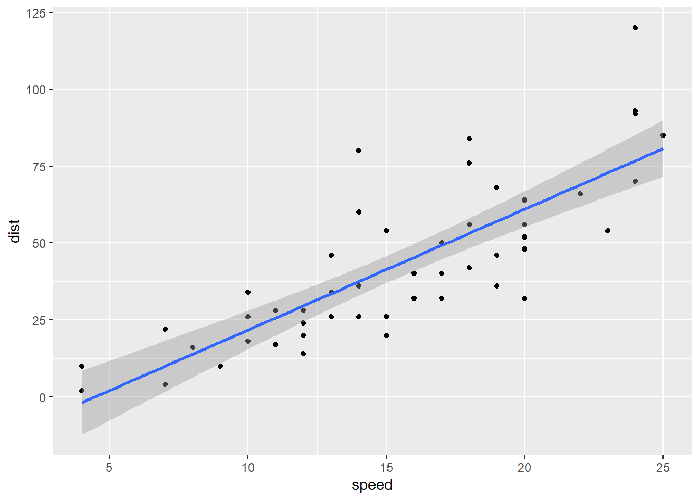
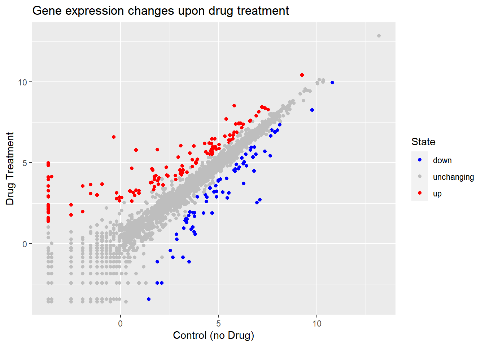
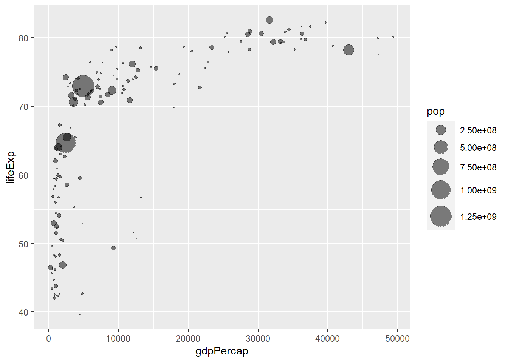
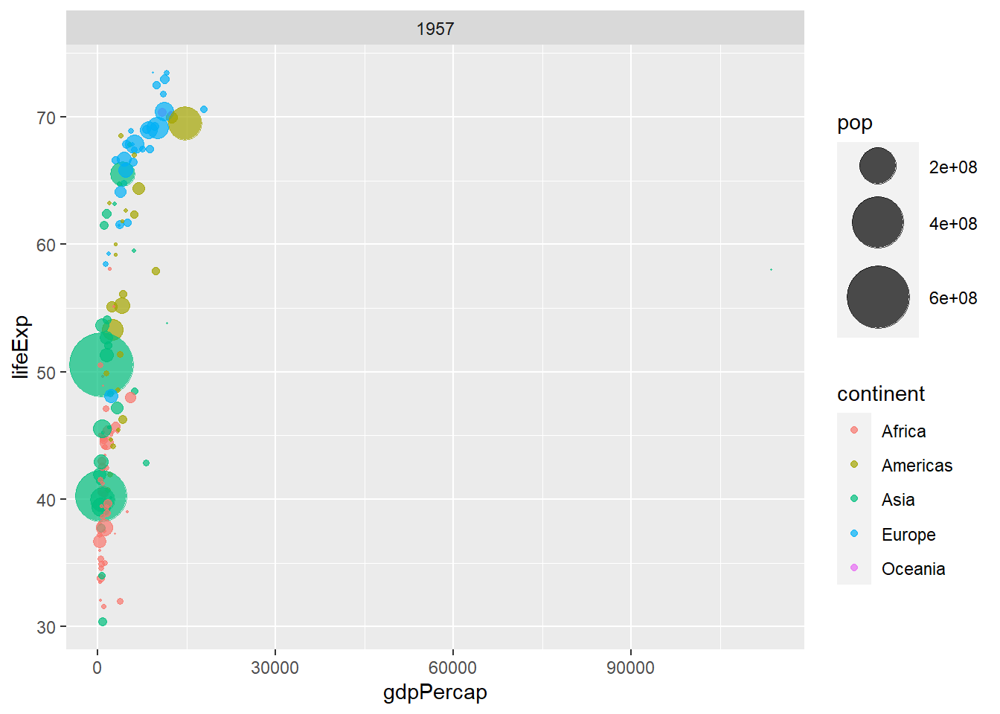
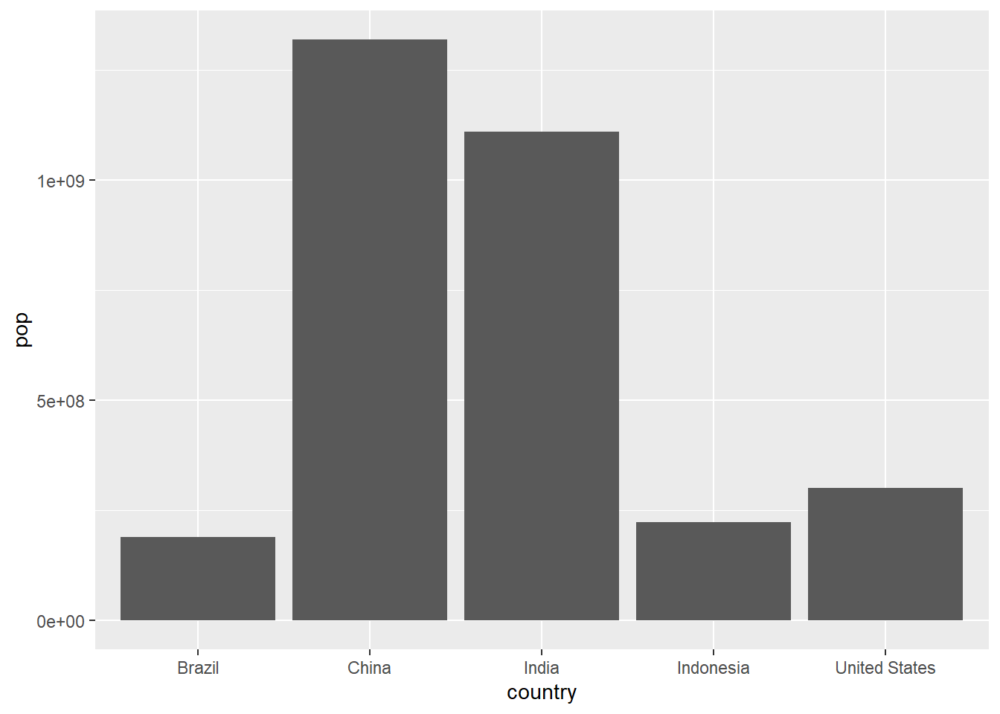
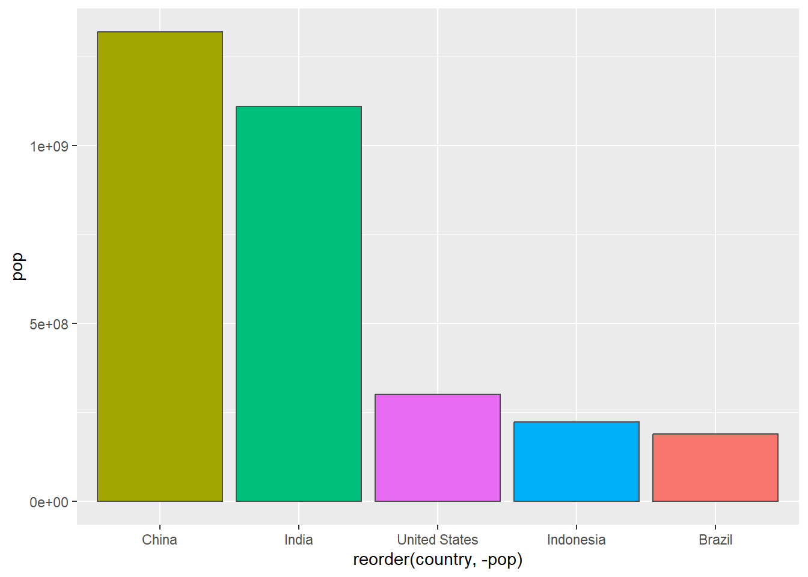
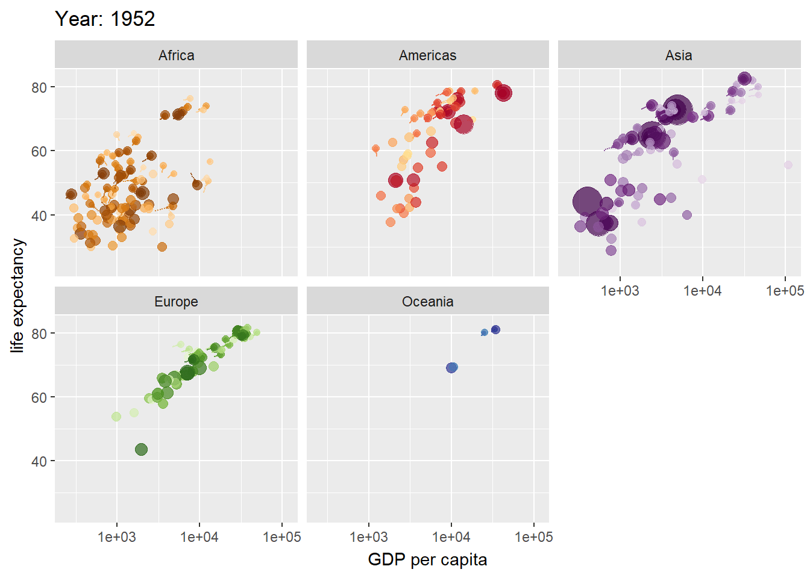

library(ggplot2)Warning: package 'ggplot2' was built under R version 4.3.1ggplot(cars)
To use ggplot2 we first need to install it on our computers. To do this we will use the function install.packages().
library(ggplot2)Warning: package 'ggplot2' was built under R version 4.3.1ggplot(cars)
head(cars) speed dist
1 4 2
2 4 10
3 7 4
4 7 22
5 8 16
6 9 10plot(cars)
ggplot: -data(data.frame for plotting) -aesthetics (aes() values - how to map data) -geom (type of plot)
ggplot(cars)+
aes(x=speed, y=dist)+
geom_point()+
geom_smooth(method="lm")`geom_smooth()` using formula = 'y ~ x'
url <- "https://bioboot.github.io/bimm143_S20/class-material/up_down_expression.txt"
genes <- read.delim(url)
head(genes) Gene Condition1 Condition2 State
1 A4GNT -3.6808610 -3.4401355 unchanging
2 AAAS 4.5479580 4.3864126 unchanging
3 AASDH 3.7190695 3.4787276 unchanging
4 AATF 5.0784720 5.0151916 unchanging
5 AATK 0.4711421 0.5598642 unchanging
6 AB015752.4 -3.6808610 -3.5921390 unchangingnrow(genes)[1] 5196ncol(genes)[1] 4table(genes$State)
down unchanging up
72 4997 127 round( table(genes$State)/nrow(genes) * 100, 2 )
down unchanging up
1.39 96.17 2.44 5196 rows, 4 columns, 127 up-regulated genes, 2.44% up-regulated
ggplot(genes) +
aes(x=Condition1, y=Condition2) +
geom_point()
p <- ggplot(genes) +
aes(x=Condition1, y=Condition2, col=State) +
geom_point()
p
p +
scale_colour_manual( values=c("blue","gray","red") )+
labs(title="Gene expression changes upon drug treatment", x="Control (no Drug)", y="Drug Treatment")
url <- "https://raw.githubusercontent.com/jennybc/gapminder/master/inst/extdata/gapminder.tsv"
gapminder <- read.delim(url)
library(dplyr)Warning: package 'dplyr' was built under R version 4.3.1
Attaching package: 'dplyr'The following objects are masked from 'package:stats':
filter, lagThe following objects are masked from 'package:base':
intersect, setdiff, setequal, uniongapminder_2007 <- gapminder %>% filter(year==2007)
head(gapminder_2007) country continent year lifeExp pop gdpPercap
1 Afghanistan Asia 2007 43.828 31889923 974.5803
2 Albania Europe 2007 76.423 3600523 5937.0295
3 Algeria Africa 2007 72.301 33333216 6223.3675
4 Angola Africa 2007 42.731 12420476 4797.2313
5 Argentina Americas 2007 75.320 40301927 12779.3796
6 Australia Oceania 2007 81.235 20434176 34435.3674ggplot(gapminder_2007) +
aes(x=gdpPercap, y=lifeExp) +
geom_point()
ggplot(gapminder_2007) +
aes(x=gdpPercap, y=lifeExp) +
geom_point(alpha=0.5)
ggplot(gapminder_2007) +
aes(x=gdpPercap, y=lifeExp, color=continent, size=pop) +
geom_point(alpha=0.5)
ggplot(gapminder_2007) +
aes(x = gdpPercap, y = lifeExp, color = pop) +
geom_point(alpha=0.8)
ggplot(gapminder_2007) +
aes(x = gdpPercap, y = lifeExp, size = pop) +
geom_point(alpha=0.5)
ggplot(gapminder_2007) +
geom_point(aes(x = gdpPercap, y = lifeExp,
size = pop), alpha=0.5) +
scale_size_area(max_size = 10)
gapminder_1957 <- gapminder %>% filter(year==1957)
head(gapminder_1957) country continent year lifeExp pop gdpPercap
1 Afghanistan Asia 1957 30.332 9240934 820.853
2 Albania Europe 1957 59.280 1476505 1942.284
3 Algeria Africa 1957 45.685 10270856 3013.976
4 Angola Africa 1957 31.999 4561361 3827.940
5 Argentina Americas 1957 64.399 19610538 6856.856
6 Australia Oceania 1957 70.330 9712569 10949.650ggplot(gapminder_1957) +
aes(x = gdpPercap, y = lifeExp, color = continent, size = pop) +
geom_point(alpha=0.7) +
scale_size_area(max_size = 15) +
facet_wrap(~year)
gapminder_1957_2007 <- gapminder %>% filter(year==1957 | year==2007)
head(gapminder_1957_2007) country continent year lifeExp pop gdpPercap
1 Afghanistan Asia 1957 30.332 9240934 820.8530
2 Afghanistan Asia 2007 43.828 31889923 974.5803
3 Albania Europe 1957 59.280 1476505 1942.2842
4 Albania Europe 2007 76.423 3600523 5937.0295
5 Algeria Africa 1957 45.685 10270856 3013.9760
6 Algeria Africa 2007 72.301 33333216 6223.3675ggplot(gapminder_1957_2007) +
aes(x = gdpPercap, y = lifeExp, color = continent, size = pop) +
geom_point(alpha=0.7) +
scale_size_area(max_size = 15) +
facet_wrap(~year)
gapminder_top5 <- gapminder %>%
filter(year==2007) %>%
arrange(desc(pop)) %>%
top_n(5, pop)
gapminder_top5 country continent year lifeExp pop gdpPercap
1 China Asia 2007 72.961 1318683096 4959.115
2 India Asia 2007 64.698 1110396331 2452.210
3 United States Americas 2007 78.242 301139947 42951.653
4 Indonesia Asia 2007 70.650 223547000 3540.652
5 Brazil Americas 2007 72.390 190010647 9065.801ggplot(gapminder_top5) +
geom_col(aes(x = country, y = pop))
ggplot(gapminder_top5) +
geom_col(aes(x = country, y = pop, fill = continent))
ggplot(gapminder_top5) +
geom_col(aes(x = country, y = pop, fill = lifeExp))
ggplot(gapminder_top5) +
aes(x=country, y=pop, fill=gdpPercap) +
geom_col()
ggplot(gapminder_top5) +
aes(x=reorder(country, -pop), y=pop, fill=gdpPercap) +
geom_col()
ggplot(gapminder_top5) +
aes(x=reorder(country, -pop), y=pop, fill=country) +
geom_col(col="gray30") +
guides(fill="none")
head(USArrests) Murder Assault UrbanPop Rape
Alabama 13.2 236 58 21.2
Alaska 10.0 263 48 44.5
Arizona 8.1 294 80 31.0
Arkansas 8.8 190 50 19.5
California 9.0 276 91 40.6
Colorado 7.9 204 78 38.7USArrests$State <- rownames(USArrests)
ggplot(USArrests) +
aes(x=reorder(State,Murder), y=Murder) +
geom_col() +
coord_flip()
ggplot(USArrests) +
aes(x=reorder(State,Murder), y=Murder) +
geom_point() +
geom_segment(aes(x=State,
xend=State,
y=0,
yend=Murder), color="blue") +
coord_flip()
library(gapminder)Warning: package 'gapminder' was built under R version 4.3.1
Attaching package: 'gapminder'The following object is masked _by_ '.GlobalEnv':
gapminderlibrary(gganimate)Warning: package 'gganimate' was built under R version 4.3.1ggplot(gapminder, aes(gdpPercap, lifeExp, size = pop, colour = country)) +
geom_point(alpha = 0.7, show.legend = FALSE) +
scale_colour_manual(values = country_colors) +
scale_size(range = c(2, 12)) +
scale_x_log10() +
facet_wrap(~continent) +
# gganimate
labs(title = 'Year: {frame_time}', x = 'GDP per capita', y = 'life expectancy') +
transition_time(year) +
shadow_wake(wake_length = 0.1, alpha = FALSE)
library(patchwork)Warning: package 'patchwork' was built under R version 4.3.1p1 <- ggplot(mtcars) + geom_point(aes(mpg, disp))
p2 <- ggplot(mtcars) + geom_boxplot(aes(gear, disp, group = gear))
p3 <- ggplot(mtcars) + geom_smooth(aes(disp, qsec))
p4 <- ggplot(mtcars) + geom_bar(aes(carb))
(p1 | p2 | p3) / p4`geom_smooth()` using method = 'loess' and formula = 'y ~ x'